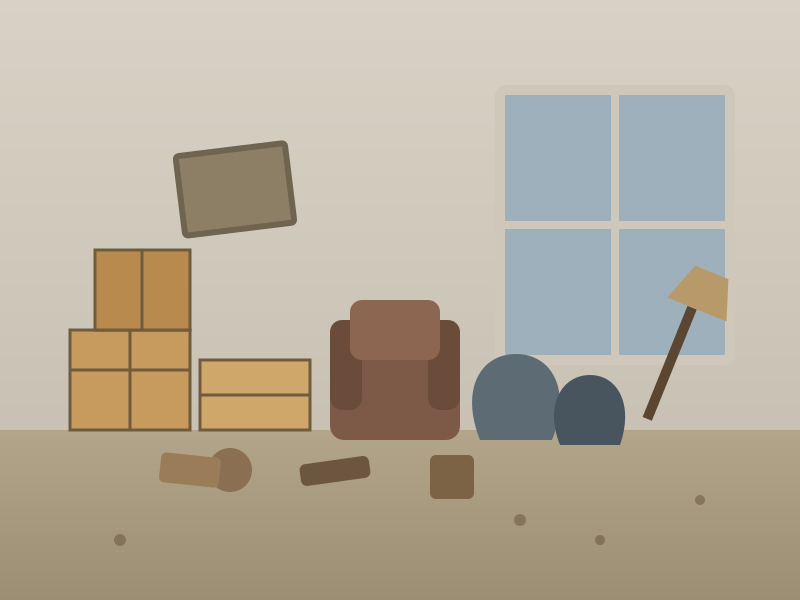
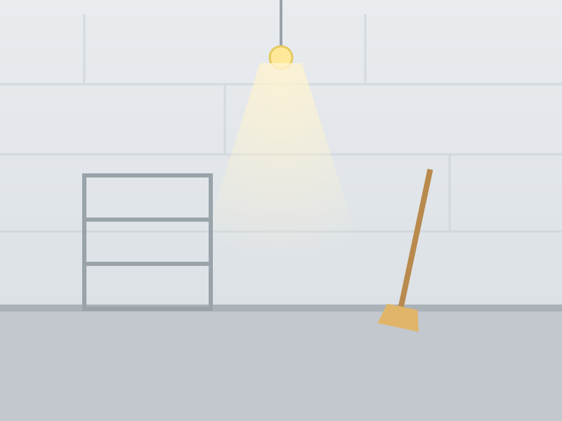
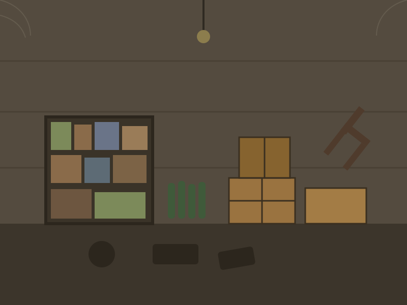
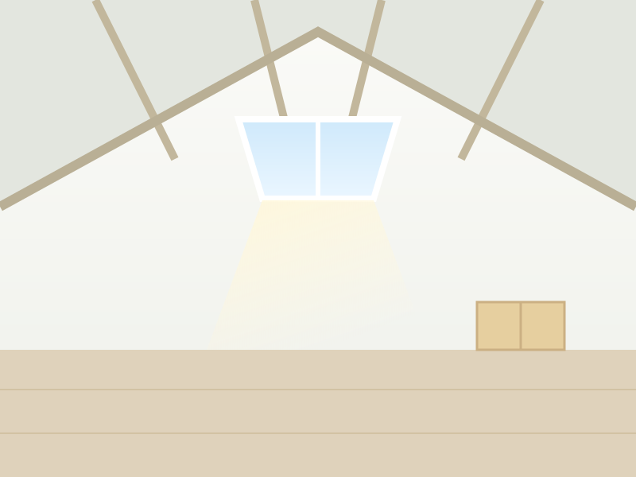
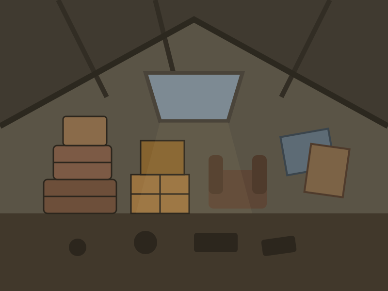

Vide-maison
Débarras complet de maisons à Saint-Louis, du sous-sol au grenier.
ClairEspace est votre expert du débarras et vide-maison à Saint-Louis, aux portes de Bâle. Maisons, appartements, caves et greniers vidés et nettoyés rapidement. Devis gratuit sous 24h.

Frontalière de la Suisse et de l'Allemagne, la région de Saint-Louis connaît de nombreux déménagements et mutations. Nous intervenons vite pour libérer les logements dans les délais.
Que ce soit pour une fin de bail, une succession ou une vente, nous gérons tout : tri, enlèvement, recyclage et nettoyage, avec un devis clair et sans surprise.
Nous intervenons du centre aux communes frontalières : Centre-ville, Bourgfelden, Neuweg, Huningue, Hégenheim, Village-Neuf, Bartenheim. Vous ne trouvez pas votre commune ? Contactez-nous, nous couvrons tout le Haut-Rhin.
Du studio encombré à la succession complète : tri, enlèvement, recyclage et nettoyage final inclus.
Débarras complet de maisons à Saint-Louis, du sous-sol au grenier.
Studios, T2, T3… enlèvement rapide, étages et accès difficiles compris.
On vide les espaces saturés puis on balaie et nettoie.
Accompagnement des familles et notaires, en toute discrétion.
Intervention respectueuse, dans le calme et la confidentialité.
Débarras lourds, nettoyage et désinfection complète.
Bureaux, commerces, entrepôts : remise en état rapide.
Enlèvement et nettoyage, bien prêt à louer ou à vendre.
Glissez le curseur : du plein au vide parfait.




Par téléphone ou formulaire, en 2 minutes.
Sur place ou sur photos, prix clair sous 24h.
On débarrasse, trie et recycle à la date choisie.
Lieux balayés et propres, prêts à l'emploi.
« Départ pour la Suisse, appartement à rendre vite à Saint-Louis. Tout a été vidé et nettoyé à temps. »
« Cave et garage débarrassés efficacement. Équipe ponctuelle et arrangeante. »
Remplissez le formulaire : réponse rapide, prix clair et sans engagement.
Notre équipe vous recontacte sous 24h. Urgence à Saint-Louis ? Appelez le 06.69.97.37.85.